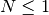

stairs – Stairs, Ladders & Ramps¶
Legacy Output¶
Incomplete. But.
FL │«─────── SP ──────»│
├»═══╪═══╗«──── SW ─────»╔══ «┐
┌┴»═══╪═══╝ ╔═══╝e │
│ │ ╔═══╝ │
HR │ ╔═══╝ HT
└─────┼» c╔═══╝d BASIC │
╔═══╝b ELEMENTS │
═══╝a «─────────────────────┘
See lines 2200 to 2300, “animate diagram”. This makes it difficult to determine what the output looks like.
Also, having the “Courier New” font used when viewing this page matters for getting the ASCII art to come out exactly right.
Analysis¶
| H: | Level-to-Level height HT |
|---|---|
| SP: | Maximum allowable spread SP, also known as L. |
There are two decision trees.
The SP factor starts us into a decision tree.
If SP is determined, then we can design
- A vertical ladder.
- Inclined Ramp or Step Ramp.
- Restricted length stairs, which can devolve to a ladder design.
If SP is not determined, then we can design unrestricted stairs.
Once the design has been completed, the display area will use a second decision tree based on angle, A, in degrees.
| P: | no. of rungs, steps, ramps or treads |
|---|---|
| N: | no.of full risers |
| TBR: | top and bottom risers |
| A: | angle |
| T: | run |
| R: | rise |
| X: | string |
| Y: | stringer |
| L: | length |
Decision Tree¶
There are six designs available.
If SP has been determined, then
[Line 450, SP Known.]
[Quirk.] L = SP.
If : Line 770, Vertical Ladder Design.
If : Line 510, Ramp Design. This can create an inclined ramp or a step ramp.
If : Line 640, Restricted Length Risers. This can create stairs, stepladder or inclined ladder.

If SP has not been determined, then
[Line 890, SP unknown.]
Show recommended maximum: 7.5 in. (8.0 in. for economy) or 19 cm (20 cm for economy)
Get MAX, Maximum rise desired
Assert MAX is within range of 5 in. to 13.5 in or 12.5 cm to 34 cm
[Quirk.] R = MAX.
Line 510, Ramp Design¶
There are two ramp designs: Step Ramp and Inclined Ramp.
If : step ramp with risers and treads
Else if : inclined ramp
Line 640, Restricted Length Risers¶
There are three restricted riser designs: Stairway, Step Ladder and Inclined Ladder. It’s also possible that a Vertical Ladder might be required.
Compute the number of risers by incrementing N.
While :
Back off one riser.
How steep is it?
If : ladder,
Else: Not quite a ladder.
This next bit is quirky. Why compute this when the ladder section will set L to zero?
Line 770, Vertical Ladder Design¶
Line 1060, Unrestricted Length Risers¶
This is Stairway Design.
While :
[Line 1160, stairs with low pitch.]
IF :
Line 1180 and 1190, Display¶
Here’s the second decision tree.
1180 :REM'
1190 :REM'.....determine type
1200 AD=A*180/PI :REM'angle in degrees
1210 IF P=0 THEN B$=" INCLINED RAMP ":GOSUB 2210:GOSUB 3100:GOTO 1320
1220 IF AD=90 THEN B$=" VERTICAL LADDER ":TR$="rungs.":GOSUB 2210:GOSUB 2840:GOTO 1320
1230 :REM'
1240 IF AD>77 THEN B$=" INCLINED LADDER ":TR$="rungs.":GOSUB 2210:GOSUB 2730:GOTO 1320
1250 :REM'
1260 IF AD>48.37 THEN B$=" OPEN-RISER STEPLADDER ":TR$="steps.":GOSUB 2210:GOSUB 2590:GOTO 1320
1270 :REM'
1280 IF AD>20.45 THEN B$=" STAIRWAY ":TR$="treads":GOSUB 2210:GOSUB 2460:GOTO 1320
1290 :REM'
1300 IF AD<=20.45 THEN B$=" STEP RAMP ":TR$="ramps.":GOSUB 2210:GOSUB 2980:GOTO 1320
It appears that it works like this.
- Special case, P=0: Inclined Ramp. Line 3100 has the picture.
- Angle of 90°: Vertical Ladder. Line 2840 has the picture.
- Angle of 77° to 90°: Inclined Ladder. Line 2730 has the picture.
- Angle of 48.37° to 77°: Open-Riser Step Ladder. Line 2590 has the picture.
- Angle of 20.45° to 48.37°: Stairway. Line 2460 has the picture.
- Angle less than 20.45°: Step Ramp. Line 2980 has the picture.
Lines 1310 to 2160 is the details display. Which includes some additional calculations on lines 1690 and 1720.
Lines 2210 to 2300 “animate diagram”. It appears to move the diagram to the right, so a new diagram can be drawn to the left.
The following sections are ASCII art, used by the display.
Lines 2320 is the introductory stairway diagram
Lines 2460 is stairway details
Lines 2590 is stepladder details
Lines 2730 is inclined ladder details
Lines 2840 is vertical ladder details
Lines 2980 is step ramp details
Lines 3100 is inclined ramp details
Stairwell and Headroom¶
This is for (optional) stairwell, SW, and headroom, HR, dimensions.
It requires
| F: | Floor Thickness, FL |
|---|---|
| SW: | Stairwell Dimension |
| HR: | Headroom Dimension |
1490 FOR Z=1 TO N
1500 HR=Z*R-F
1510 IF HR>=75 THEN 1530
1520 NEXT Z
1530 X=N-Z :REM'number of runs
1540 SW=(Z-1)*T
Note the quirk if setting X to a value that doesn’t seem to fit with the definition of X. And. That value gets overwritten later.
1690 X=SQR(R^2+T^2)
Other¶
Lines 3220 is a subroutine to compute fractions from decimal values.
Implementation¶
This could be seen as a rather complex Decision Tree class hierarchy. It’s a kind of Factory because it emits specific design objects.
It’s also a kind of Chain of Command structure. A sequence of rules are chained together. Each rule either emits a design or passes control to a fallback rule.
The subtlety is there may be back-and-forth interaction between some design rules and some API which must gather user input.
In other cases (i.e., beltdriv, chain, gearing, shaft and torque) there isn’t a complex decision tree; rather there is a sequence of steps to refine a design, so there’s no conditional back-and-forth.
In this stairs case, though, a subsequent input is conditional in a way that – perhaps – should be isolated to the calculation module, not the application itself.
Additionally, it’s important to avoid peppering the output display with too many if-statements to handle the six different special cases. Sadly, there are other programs (e.g. beamdefl and satorbit) which suffer from this design deficiency.
Top-Level Module¶
hamcalc.construction.stairs
There are two implementations of hamcalc.construction.stairs.
- The default implementation is a (relatively) complex set of functions that simply step through the design process.
- An alternate implementation is a slightly more flexible (but more complex) object-oriented Chain of Command implementation.
We have the following cases for display.
- Angle of 90°: Vertical Ladder. H= 6, L= 0.
- Angle of 77° to 90°: Inclined Ladder. 80°: H= 6, L= 1.058
- Angle of 48.37° to 77°: Open-Riser Step Ladder. 60°: H = 6, L= 3.464
- Angle of 20.45° to 48.37°: Stairway. 30°: H= 6, L= 10.39
- Angle less than 20.45°: Step Ramp; if H < 5, then inclined Ramp. 20°: H=6, L=16.48. And. 15° H=5, L=18.66.
The decision tree for design, however, has only four cases for design.
- Vertical Ladder
- Ramp (step or inclined)
- Restricted Length Risers, which may devolve to a ladder.
- Unrestricted Length Risers
Units, BTW, are inches for this module.
Test Case 1: Unrestricted length riser
>>> import hamcalc.construction.stairs as stairs
>>> s_u= stairs.stair_design( 72, R=8.0 )
>>> round(s_u.A,3)
40.601
>>> round(s_u.N,3)
9
>>> round(s_u.T,3)
9.333
>>> round(s_u.X,3)
12.293
>>> round(s_u.Y,3)
98.342
>>> round(s_u.R,3)
8.0
>>> round(s_u.P,3)
8
Test Case 2: Ladder
>>> l= stairs.stair_design( 72, 0 )
>>> round(l.A,2)
90
>>> round(l.P,3)
5
>>> round(l.X,3)
0
>>> round(l.R,3)
13.5
>>> round(l.P,3)
5
Test Case 3: Step Ladder
>>> sl= stairs.stair_design( 72, 12.696 )
>>> round(sl.A,2)
80.0
>>> round(sl.N,3)
14
>>> round(sl.R,3)
5.143
>>> round(sl.X,3)
14.113
>>> round(sl.Y,3)
183.472
>>> round(sl.P,3)
13
>>> round(sl.T,3)
13.143
Test Case 4: Inclined Ladder There is one design with several different displays. Once you’ve designed the ladder, the distinction between step ladder and inclined ladder seems to be the difference between “steps” and “rungs.”
>>> il= stairs.stair_design( 72, 41.568 )
>>> round(il.A,2)
60.0
>>> round(il.N,3)
14
>>> round(il.R,3)
5.143
>>> round(il.X,3)
14.113
>>> round(il.Y,3)
183.472
>>> round(il.P,3)
13
>>> round(il.T,3)
13.143
Test Case 5: Restricted Stairway Again, with essentially one design and multiple displays, this looks like designs.
>>> s= stairs.stair_design( 72, 124.68 )
>>> round(s.A,2)
30.01
>>> round(s.N,3)
14
>>> round(s.R,3)
5.143
>>> round(s.X,3)
14.113
>>> round(s.Y,3)
183.472
>>> round(s.P,3)
13
>>> round(s.T,3)
13.143
Test Case 6: Step Ramp A distinctive design.
>>> sr= stairs.stair_design( 72, 197.76 )
>>> round(sr.A,2)
20.01
>>> round(sr.N,3)
14
>>> round(sr.R,3)
5.143
>>> round(sr.X,3)
16.058
>>> round(sr.Y,3)
208.756
>>> round(sr.P,3)
13
>>> round(sr.T,3)
15.212
Test Case 7: Inclined Ramp
>>> ir= stairs.stair_design( 60, 223.92)
>>> round(ir.A,2)
15.0
>>> round(ir.N,3)
12
>>> round(ir.R,3)
5.0
>>> round(ir.X,3)
20.961
>>> round(ir.Y,3)
230.576
>>> round(ir.P,3)
11
>>> round(ir.T,3)
20.356
Test Case for Stairwell and Headroom
>>> s_u.F = 8
>>> swhr= stairs.stairwell_headroom( **s_u )
>>> round(swhr.SW, 3 )
74.667
>>> round(swhr.HR, 3 )
64.0
- hamcalc.construction.stairs.handrail_height(**args)¶
Compute handrail height. Requires the following arguments.
A : Angle in degrees. Updates args with
B : Handrail height.
- hamcalc.construction.stairs.is_ladder_inclined(**args)¶
Does this design reflect an inclined ladder?
- hamcalc.construction.stairs.is_ladder_open(**args)¶
Does this design reflect an open stepladder?
- hamcalc.construction.stairs.is_ladder_vertical(**args)¶
Does this design reflect a vertical ladder?
- hamcalc.construction.stairs.is_ramp_inclined(**args)¶
Does this design reflect an inclined ramp?
- hamcalc.construction.stairs.is_ramp_step(**args)¶
Does this design reflect a step ramp?
- hamcalc.construction.stairs.is_stairway(**args)¶
Does this design reflect a stairway?
- hamcalc.construction.stairs.max_height(unit)[source]¶
Returns the maximum height for economy and residential construction.
Parameters: unit – Current units (either INCH or MILLIMETRE) Returns: pair with maximum height for economy and maximum height for residential purposes.
- hamcalc.construction.stairs.stairwell_headroom(**args)¶
Requires the following arguments.
T : run R : rise N : no.of full risers F : Floor Thickness, FL Updates args with “HR” and “SW”.
Sw : Stairwell Dimension Hr : Headroom Dimension
Function-Oriented Implementation¶
hamcalc.construction.stairs.func
‘Simple’ functions to implement stairs design.
Note that these calculations only work in inches. The units, therefore, must all be converted from input to INCH and from INCH to desired output.
- hamcalc.construction.stairs.func.stair_design(H, L=None, R=None)[source]¶
Determine what kind of stair, ramp or ladded will be involved.
Parameters: - H – Height
- L – optional Length (also called “SP” or Spread). If omitted, this is an unrestricted stairwell.
- R – If L is unknown, this must be the maximum step step height.
Returns: AttrDict object with complete design. :H: Level-to-Level height HT :L: Maximum allowable spread SP :P: no. of rungs :N: no.of full risers :TBR: top and bottom risers :A: angle :T: run :R: rise :X: string :Y: stringer :L: length :F: Floor Thickness, FL
Object-Oriented Implementation¶
hamcalc.construction.stairs.obj
Class definitions to implement stairs design.
Note that these calculations only work in inches. The units, therefore, must all be converted from input to INCH and from INCH to desired output.
The Designers involve a Chain of Command processing sequence where a stairwell designer may fall back to another designer.
- class hamcalc.construction.stairs.obj.Inclined_Ramp[source]¶
A Designer for Inclined Ramps; L and H define the structure.
- class hamcalc.construction.stairs.obj.Restricted_Risers[source]¶
A Designer for Restricted Risers; L and H define the structure.
- class hamcalc.construction.stairs.obj.Step_Ramp[source]¶
A Designer for Step Ramps; L and H define the structure.
- class hamcalc.construction.stairs.obj.Unrestricted_Risers[source]¶
A Designer for Unrestricted Risers; L must be None.
- class hamcalc.construction.stairs.obj.Vertical_Ladder[source]¶
A Designer for Vertical Ladders; L must be zero.
- hamcalc.construction.stairs.obj.stair_design(H, L=None, R=None)[source]¶
A convenience function to provide the same API as the function implementation.
This creates an instance of Unrestricted_Risers and uses that to start the design process. This may fallback to any of the other designers.
Quirks¶
Lines 1360 and 1640 check for B$="RAMP". No line sets B$ to "RAMP".